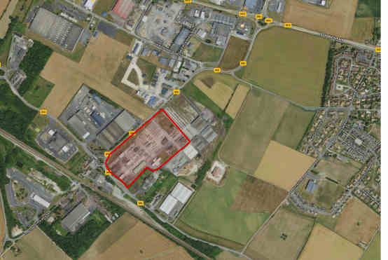

Non à Amazon à Moult (14) ! Ni ici ni ailleurs.

Amazon veut implanter un entrepôt d’environ 8000 m2 (5600 m2 d’entrepôts + 2400 m2 en préau) sur près de 13 m de hauteur, sur un terrain de la commune de Moult-Chicheboville.
L’agence de Moult va recevoir, reconditionner et réexpédier une masse de marchandises. Cela va donc générer un trafic routier très important.
Il est prévu 8 quais de chargement pour poids lourds, ce qui implique au minimum un trafic d’une vingtaine de semi-remorques toutes les nuits et un ballet incessant de camionnettes le jour, car Amazon fonctionne de jour comme de nuit 24h/24H et ce 7j /7j. Sans compter les centaines de places de parkings pour les camionnettes.
On sait qu’Amazon détruit des emplois (cf le rapport de Mounir Mahjoubi en 2019), détruit les commerces de proximité, pratique la fraude fiscale à grande échelle et est un des pires émetteurs de CO2 au monde. Et même, la Convention Citoyenne sur le Climat a exigé un moratoire sur ce type d’implantations.
En décembre 2019, Mme Burgat la maire de Mondeville ainsi que les élus de Caen-la-Mer avaient pourtant refusé Amazon. Ils déclaraient qu’Amazon détruisait des emplois dans le commerce physique traditionnel, pratiquait l’évasion fiscale :
« pour se soustraire au système de solidarité qui régit notre pacte social républicain », et que « le volume d’achats, le stockage numérique des données, le développement de la livraison ultra-rapide impacteraient fortement l’environnement ».
Le projet Amazon à Moult
C’est un terrain de 6,5 ha qui recevra toutes les infrastructures Amazon, une parcelle qui appartenait avant à CID-Bois.
La surface de l’entrepôt sera de 5600 m2 avec une hauteur de 13m, en plus d’un auvent de 2300 m2.
La plus grande partie du reste du terrain sera goudronnée en parkings. Plus de 550 places sont prévues pour des véhicules de livraison locale.
Cette agence de livraison va recevoir, reconditionner et ré-expédier une masse de marchandises en provenance des autres entrepôts d’Amazon, comme ceux de l’agglo de Rouen.
Avec 8 quais de chargement, les poids lourds amèneront les marchandises de nuit 7j/7. Celles-ci repartiront dans les véhicules de livraison toute la journée 7j/7.
Le permis de construire a été accordé par la Mairie de Moult le 11 janvier 2021.
Les documents officiels :
- le plan de situation
- l’arrêté municipal (11/01/2021)
- Plan 1
- Plan 2
- Plan 3
- Plan substitution
- Plan réseau